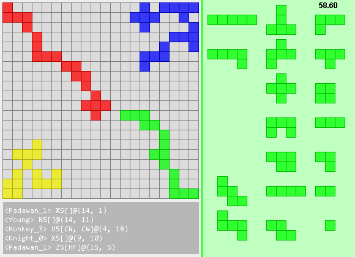

Java implementation of Blokus
JBlokus is a computer game that simulates the popular board game Blokus. JBlokus supports many features that enhance the Blokus experience, including local play against the award-winning BlokusAI and network play over either a LAN connection or an online connection. JBlokus is currently still under development, but you can always get the latest stable release at this site.

Blokus RulesIn Blokus, you are given a set of Blokus pieces that are made up of interconnected squares. The goal of the game is to place as many pieces on the 20x20 board and block your opponents from doing so. On your turn, you may place one piece on the board, according to the following rules:
At the end of the game, players are scored on the size of the pieces they have remaining. The person with the smallest number of total squares on their remaining pieces wins!
Click and Drag to move pieces
If you want to play locally with the computer or friends sharing the same computer, run the JBlokus.jar client program and select "Local Play." You can add human players to the game by entering the name in the lower left and clicking join, and reset the players by clicking reset. Once you are ready, click "Start Game" to start the game!
JBlokus comes with a JBlokus Server that you can use to host an online or LAN game. To start the game, run the JBlokus_Server.jar file, select a port and AI level, and start the server. If you are playing over LAN, the server IP will be the one displayed on the Server screen. If you are playing over the internet, you will need to find your public IP (http://www.whatismyip.com/) and set up port forwarding on your chosen port (the default is port 4031). Once the server has started, each player must start the JBlokus.jar client program and enter in the server IP and port number and click "Online Play." Players will then be brought to the game setup screen, where they can join the game by entering their name and selecting "Join". Once everyone is ready, click "Start Game" on the server screen to start the game!